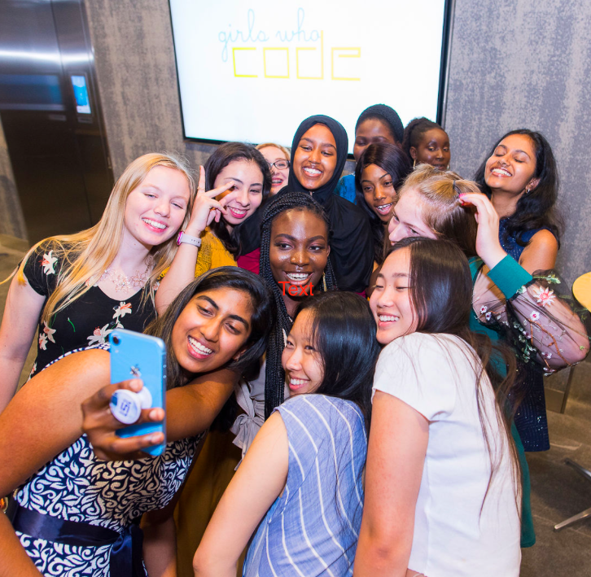

RESUME
Education
University of Illinois at Urbana-Champaign - Bachelor of Science in Actuarial Science
August 2020 - May 2024
GPA: 3.92/4.00
Actuarial Exams
Exam FM/2: Sitting August 2021
Experience
DLVisuals Photo/Video Studio - Photography Assistant
July 2020 - August 2020
Assisted principal photographer with lighting, sets and props for portrait and tabletop product photography
Organized photo accessories, backdrops, lighting modifiers and grip equipment for studio efficiency

Girls Who Code Summer Immersion Program - Student
June 2019 - August 2019
Collaborated with teammates to program a website that helps teenagers track and prioritize their mental and physical health
Explored computer science concepts to strengthen skills and knowledge in several programming languages, such as Scratch, Python, and HTML
Leadership and Involvement
Actuarial Science Club - Workshop Committee Member
August 2020 - Present
- Collaborate with committee members to plan the Annual Spring Symposium and other various workshops intended for professional development
Design marketing graphics to provide students and alumni with information regarding upcoming events
Improve professional skills and expand connections through events, workshops, and networking
Gamma Iota Sigma Professional Fraternity -
Active Member
August 2020 - Present
- Gain exposure to professional and educational opportunities for development through panels and conferences
Phi Mu Social Sorority -
Active Member
August 2020 - Present
Yearbook -
Section Editor
August 2017 - May 2020
- Oversaw writers, designers, and photographers to create spreads for the People section and complete deadlines in a timely manner.
- Interviewed students and staff for stories.
- Consulted teachers with the section’s progress.
Technical Skills
Microsoft: Excel(novice), Outlook(proficient), Word(proficient), PowerPoint(proficient)
Programming: VBA(novice), R(novice), HTML(novice)
MY WORK
Here are some of my latest projects.
Click on the images to learn more about them